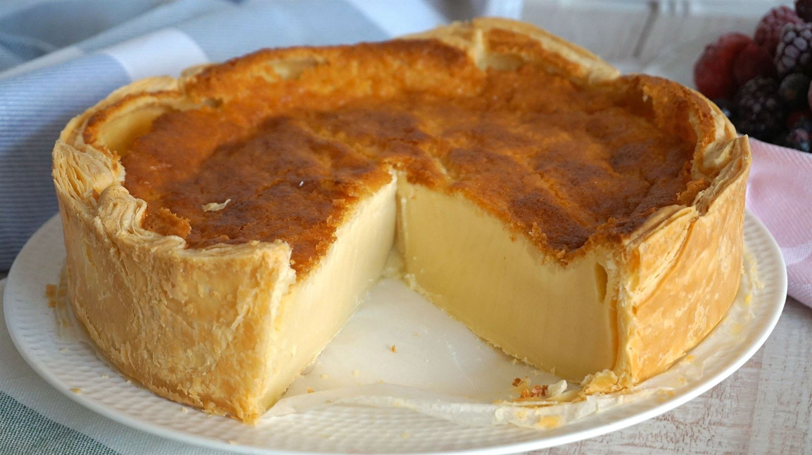
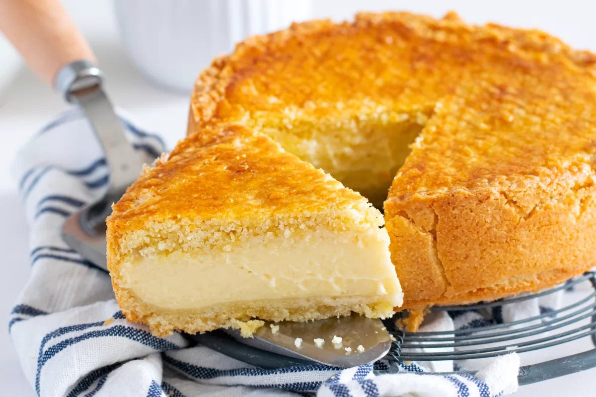

Pastel de arroz
Este pastel de arroz de Bilbao es muy fácil de hacer. Y conlleva muy poco trabajo. Tan sólo que
es mezclar sus ingredientes. Al final, es muy sencillo pero su resultado sorprende ¡Compruébalo!

Pastel vasco
El pastel vasco es una preparación tradicional de la zona vasco-francesa, cuyos orígenes se remontan
al siglo XVIII. Una elaboración un tanto entretenida, pero nada complicada, que con un poco de paciencia
deleitará a todo aquel que la pruebe. ¡Compruébalo!